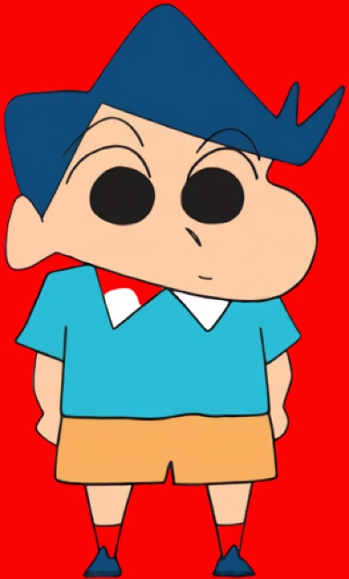

ShinChan - One Of The Most Famous Childhood Cartoons
ShinChan, which is very popular among the young generations, has won the hearts of all. The fun, joy and happiness we get watching it is just incomparable,
So, in this HTML Document, we shall know about its characters briefly and watch short clips related to the cartoon. So, let's begin!!

1. ShinChan(Shinnosuke Nohara)
Everyone's favourite, ShinChan is infact, very naughty. He roams arounds ,creates problems but handles it with great enjoyment. He is just 5 years old, going to Kindergarden school with his friends. He lso has a pet dog named Shiro, who follows everything told by ShinChan. He lives in Kasukabe, with his parents. He loves eating "Chocopi" and his favourite cartoon is "Action Kamein", but what he hates the most is Capsicum.This is all about the little fellow.
Everyone's favourite, ShinChan is infact, very naughty. He roams arounds ,creates problems but handles it with great enjoyment. He is just 5 years old, going to Kindergarden school with his friends. He lso has a pet dog named Shiro, who follows everything told by ShinChan. He lives in Kasukabe, with his parents. He loves eating "Chocopi" and his favourite cartoon is "Action Kamein", but what he hates the most is Capsicum.This is all about the little fellow.

2.Kazama(Toru Kazama)
Kazama is Shin-chan's immaculately groomed, rich and perfectly mannered friend and classmate from the sunflower class, who usually loses his nerves and composure with Shin-chan's antics. Despite this, their friendship is actually pretty close compared to to his relationship with any of his other friends.
Kazama is Shin-chan's immaculately groomed, rich and perfectly mannered friend and classmate from the sunflower class, who usually loses his nerves and composure with Shin-chan's antics. Despite this, their friendship is actually pretty close compared to to his relationship with any of his other friends.
.jpg)
3.Masao(Masao Sato)
Masao, one of Shinchan's friends, is also 5 years old and the smallest member of Kasukabe Defence Force. He is known to be a scaredy cat and a cry baby. His hobby is to write comics.
Masao, one of Shinchan's friends, is also 5 years old and the smallest member of Kasukabe Defence Force. He is known to be a scaredy cat and a cry baby. His hobby is to write comics.

4.Bochan(Bo Suzuki)
He is another of Shin-chan's friends.He loves to collect various kinds of stone and investigating urban legends and various mysterious objects such as UFOs. He often surprises his friends with his insight, though he speaks quite slowly.
He is another of Shin-chan's friends.He loves to collect various kinds of stone and investigating urban legends and various mysterious objects such as UFOs. He often surprises his friends with his insight, though he speaks quite slowly.
👈A Short Clip for you all

Nene-Chan, One of the friends of Shinchan, behaves much like a leader. She likes to play restuarant with her friends and don't allow them to play the game which they like. She generally
gives orders to her friends and they have to listen her....

6.Himawari(Himawari Nohara)
Shin-chan's sister and the youngest child of the Nohara family, born in 1996. A precocious and vibrant infant. While technically newborn, her character has matured and grow n more intelligent during her stay in the series. She possesses a palpable lust for shiny objects (jewels and precious metals) and brand-name goods, being able to discern a real jewel from a simple piece of imitation (and throwing away the latter).
Shin-chan's sister and the youngest child of the Nohara family, born in 1996. A precocious and vibrant infant. While technically newborn, her character has matured and grow n more intelligent during her stay in the series. She possesses a palpable lust for shiny objects (jewels and precious metals) and brand-name goods, being able to discern a real jewel from a simple piece of imitation (and throwing away the latter).

7.Shiro(Shiro Nohara)
Shiro is a white, fluffy pup Shin-chan found in a cardboard box early in the series. While a beloved member of the family, he is the subject of neglect thanks to his owner's forgetfulness and short attention-span.
He is a very intelligent dog, often presenting logic and intellect that surpasses his human owners.
👈Don't miss this one😂🤣

8.Misae(Misae Nohara)
Shin-chan's mother. She is 29 and a typical housewife of post-war Japan: She cleans, launders, cooks, sews, mothers Shin-chan and his sister, and lazes. She is a tough and strong woman. While at heart a caring and nurturing individual, her positive aspects are often offset by her many shortcomings.While she spends as little as possible on the less-essential needs of her husband and son, she loves to splurge on Himawari and herself, though she is noted to have instances of great generosity. She always changes her hairstyles as seen it is sometimes curly and sometimes long and shattered hair. Most of her luxury purchases, however, often end up broken, misused or otherwise ruined by her children, sometimes even before she had a chance to try them.
Shin-chan's mother. She is 29 and a typical housewife of post-war Japan: She cleans, launders, cooks, sews, mothers Shin-chan and his sister, and lazes. She is a tough and strong woman. While at heart a caring and nurturing individual, her positive aspects are often offset by her many shortcomings.While she spends as little as possible on the less-essential needs of her husband and son, she loves to splurge on Himawari and herself, though she is noted to have instances of great generosity. She always changes her hairstyles as seen it is sometimes curly and sometimes long and shattered hair. Most of her luxury purchases, however, often end up broken, misused or otherwise ruined by her children, sometimes even before she had a chance to try them.
9.Hiroshi(Hiroshi Nohara)
Shin-chan's father from Akita in Northern Japan, and is the sole source of income. Also known as Harry, he is a loving father to his two children, and ultimately a devoted husband. While he is the family bread-winner, he hands the reins of finance over to his wife, who maintains a totalitarian level of control on family spending. At age 35, he is a stereotypical Japanese salaryman, working eight-hour days, enduring overstuffed trains, enjoying the occasional nightlife, and giving every bit of his take home pay to his wife every month.
Shin-chan's father from Akita in Northern Japan, and is the sole source of income. Also known as Harry, he is a loving father to his two children, and ultimately a devoted husband. While he is the family bread-winner, he hands the reins of finance over to his wife, who maintains a totalitarian level of control on family spending. At age 35, he is a stereotypical Japanese salaryman, working eight-hour days, enduring overstuffed trains, enjoying the occasional nightlife, and giving every bit of his take home pay to his wife every month.

10. Yoshinaga ma'am and Matsuzaka ma'am(Midori Yoshinaga)(Ume Matsuzaka)
They are the teachers of Shinchan's kindergarden school.They are the rivals of each other, which is commonly seen in the episodes. Both are 24 years old.So here ends the list of characters of Shinchan.
They are the teachers of Shinchan's kindergarden school.They are the rivals of each other, which is commonly seen in the episodes. Both are 24 years old.So here ends the list of characters of Shinchan.
So this leads to the end of my HTML Document. Shinchan's episodes can be streamed in Disney+Hotstar, which you all can access for a brighter childhood.
Thank You
©R.D.G Creations
Thank You
©R.D.G Creations